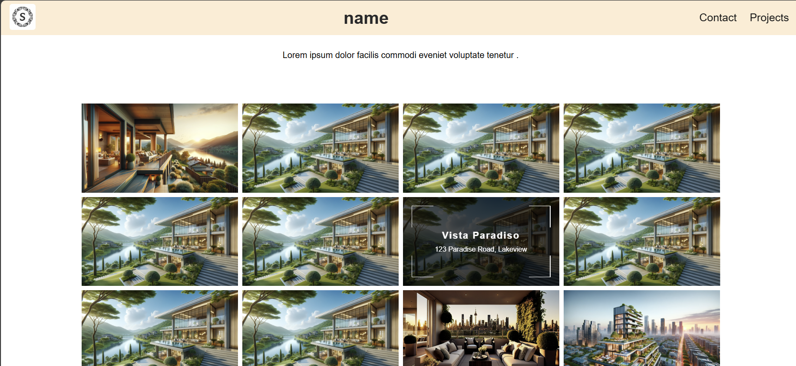

02WEB EXPERIENCE
Photographer Portfolio
A portfolio concept for photographers and creatives, focused on visual presentation and responsive layout.
HTML / CSS / JAVASCRIPT / REACT
View live project01 / WORK INDEX
A curated collection of product, brand, commerce and web work. The strongest end-to-end project comes first, followed by focused builds.
 001
001
Independent fashion brand developed from visual identity to commerce.
Brand identity, art direction, storefront design and development, Stripe payments and the customer purchase flow — built as one connected product experience.
View case study02 / SELECTED BUILDS
Smaller projects that demonstrate interface implementation, browser APIs and practical JavaScript.

A portfolio concept for photographers and creatives, focused on visual presentation and responsive layout.
HTML / CSS / JAVASCRIPT / REACT
View live project
Search weather conditions, temperature and wind data for cities around the world.
HTML / CSS / JAVASCRIPT
View live project
A lightweight browser tool for creating QR codes from different types of content.
HTML / CSS / JAVASCRIPT
View live project03 / NEXT
Start with SPACE JOB — the project where brand, interface, commerce and implementation come together.